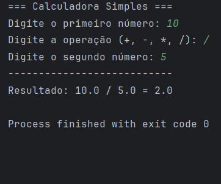
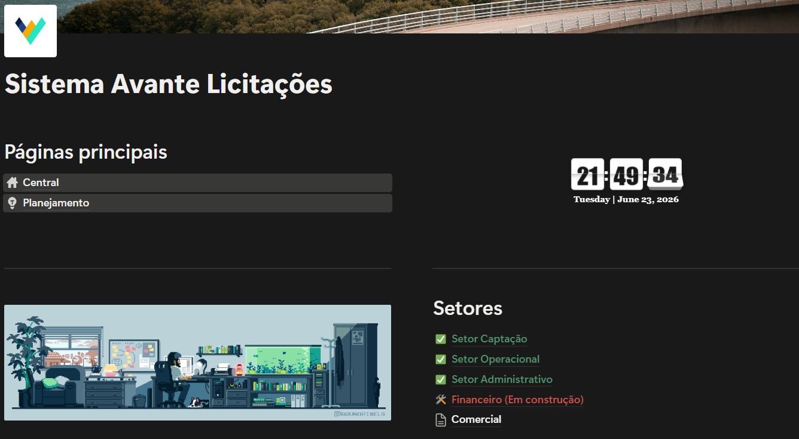
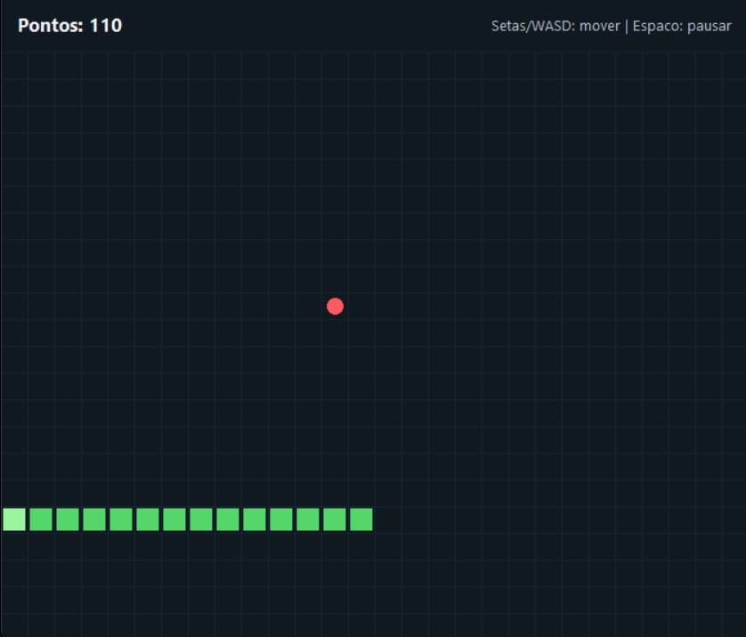
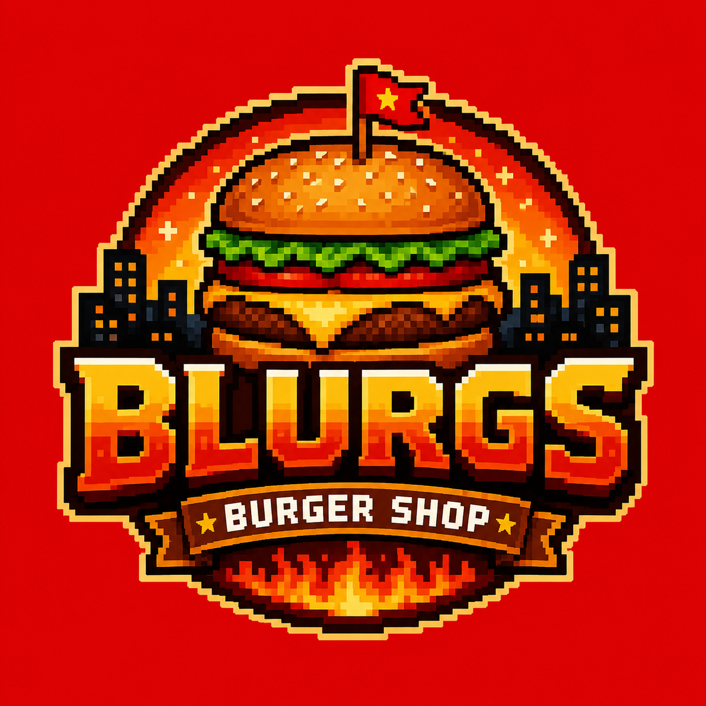

Aqui você encontrará uma lista dos meus principais projetos desenvolvidos ao longo do curso de Engenharia de Software.
Este site de portfólio pessoal, desenvolvido em HTML e CSS, apresenta minhas habilidades, projetos e experiências de forma clara e organizada.
O projeto reúne páginas de apresentação, projetos e contato, com foco em navegação simples e visual consistente. Foi uma ótima oportunidade para aplicar conceitos de Grid, Flexbox e responsividade.

Uma calculadora simples desenvolvida em Java, um dos primeiros projetos feitos durante o curso.
A calculadora trabalha operações básicas e reforça conceitos iniciais de lógica de programação, estrutura de repetição e tratamento de exceções básicas.

Uma solução feita com Notion (Arquitetura No-Code) para organizar processos de licitação em uma empresa onde trabalhei.
Esse sistema se originou de quando identifiquei um problema de organização e comunicação entre as equipes envolvidas no processo de licitação. Diante disso me juntei a uma equipe para desenvolver uma solução que melhorasse a eficiência e a transparência do processo, esse sistema feito a partir do Notion junta todas as informações de todos os setores em unico lugar e vincula automaticamente as demandas aos responsáveis de maneira organizada e visual.
Caso queira ver mais, acesse Sistema Avante no Notion.

Um jogo simples desenvolvido em Python utilizando a biblioteca Pygame.
O projeto explora movimentação de sprites, sistema de pontuação, detecção de colisões e loops de eventos usando os recursos nativos da biblioteca Pygame.

Um jogo que está em desenvolvimento com alguns colegas do curso, onde o protagonista gerencia uma hamburgueria.
O jogo está sendo desenvolvido em grupo e mistura elements de gerenciamento de tempo, evolução do personagem e atendimento dinâmico de clientes. O foco atual é refinar a lógica de pedidos.